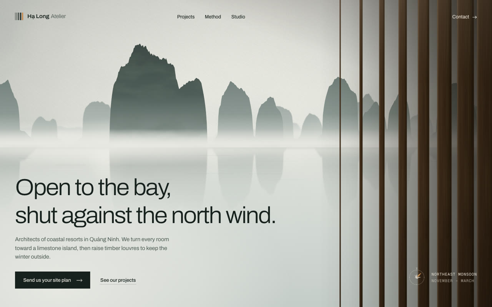
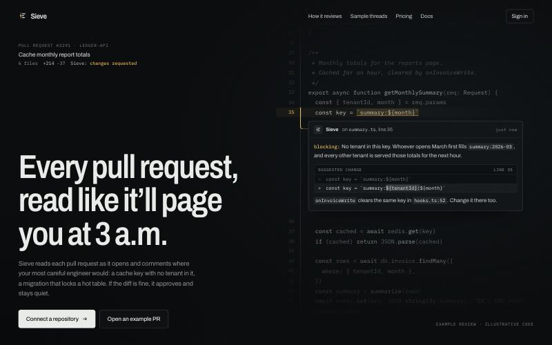
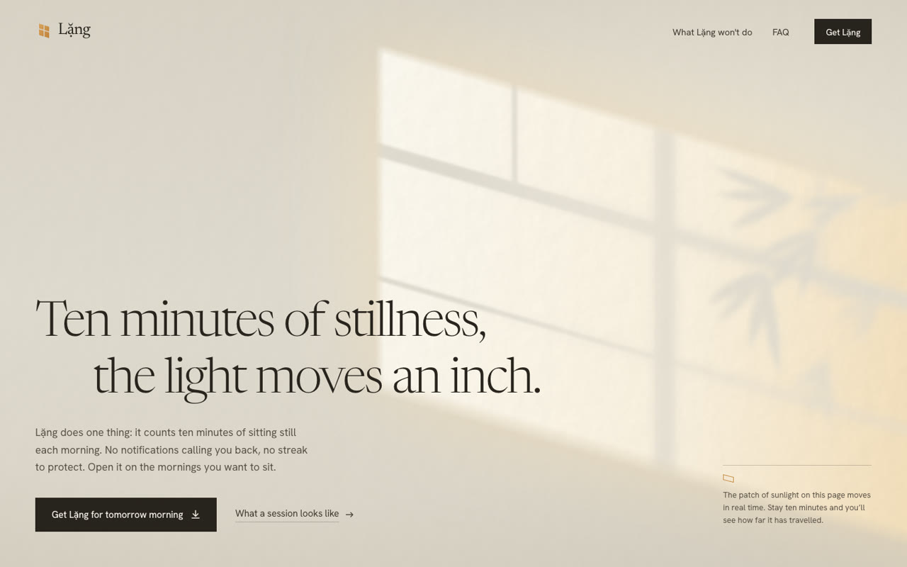

cinematic-motion-ui · live demos
Hero sections that don’t look AI-made.
Each page was built by Claude from one short prompt with the cinematic-motion-ui skill. No stock media: every scene and animation is drawn in code. Open one and watch the first few seconds.

Architecture studio
Hạ Long Atelier
Teak louvres turn open blade by blade to reveal a limestone bay in morning mist.
Open demo →
AI code review
Sieve
A reading band stops on the buggy line; the code splits open for a senior-engineer review.
Open demo →
Meditation app
Lặng
Morning sun drifts across a plaster wall in real time, over the ten minutes of one sitting.
Open demo →